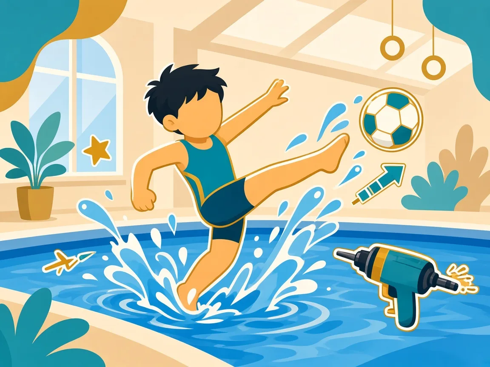

部分家庭同時面對焦慮、情緒低落、強迫行為、創傷記憶或情緒起伏。這些不是「行為問題」的另一個名稱，也不會因為學會踢水就消失。教練的角色是觀察、記錄、調課堂強度，並與家長／已提供的醫護資料對齊——不診斷、不停藥、不公開討論孩子的狀況。
溫馨提示：本頁為家長教育整理，供認識特殊需要與游泳教學方向參考，並非醫療診斷或治療建議。孩子個別安排請 WhatsApp 與教練商討。

水中若突然失聯或崩潰，先保安全、少說話、私下處理
 節奏與深壓有時能降低喚醒，但不是治療保證
節奏與深壓有時能降低喚醒，但不是治療保證
與水相關的注意
- 用藥：某些藥物可能影響平衡、血壓或體溫調節。請告知教練當日狀況與醫生已寫下的活動限制；我們不會擅自停藥或改劑量。
- 情緒波動：水中可能突然哭鬧、僵住或「失聯」。當下先確保安全，帶到較安靜位置，減少圍觀與長篇講道理。
- 怕水或嗆水記憶：過往創傷可能在入水時被觸發。請用漸進接觸，絕不強推。詳見漸進入水與正向行為。
- 身體形象：部分孩子對更衣或身體暴露特別敏感，優先家庭更衣室與最小必要協助。
家長可以怎樣配合
- 課前用短句說明近況（睡眠、情緒、用藥有無改動）。
- 情緒事件請讓教練私下處理，不要在池邊當眾分析診斷。
- 需要專業支援時，請聯絡醫生、輔導或學校社工／SENCO；教練只負責轉介與課堂調整。
若你或家人正感到情緒困擾，可致電衛生署精神健康支援熱線 18111（24 小時）。緊急危險請打 999。
家長常見問題
游泳能治療焦慮或抑鬱嗎？
不能當成治療。水中活動有時幫助調節喚醒與睡眠，但目標是安全參與與生活質素，不是「游好就會好返」。
孩子有精神科跟進，還可以試堂嗎？
多數可以，但必須課前溝通用藥與限制。請先 WhatsApp 說明，我們再建議起步方式。
延伸：安全指引 · 感覺統合 · 香港支援系統 · 總覽